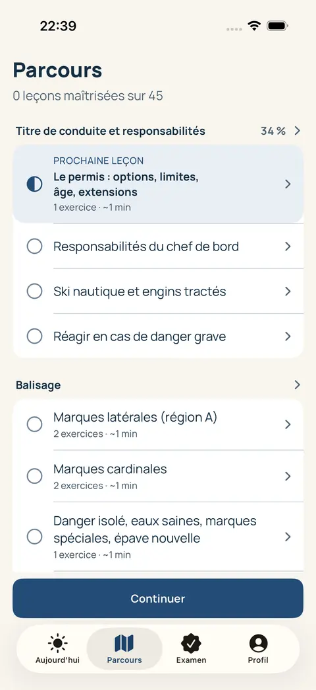
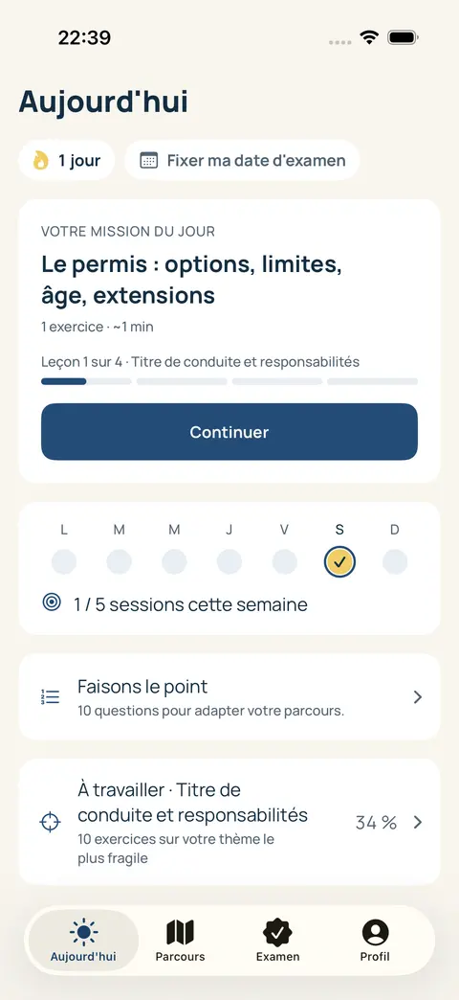

Stratégie produit
Clarifier l’usage, challenger les hypothèses et définir le bon périmètre pour avancer avec une direction partagée.
Cadrage · Parcours · Feuille de routeStudio indépendant de produits mobiles
Stratégie · Design · DéveloppementNous imaginons et développons des applications utiles, soignées et pensées pour durer.
Donnons forme à votre projet01 / Notre expertise
Une application réussie réunit une idée juste, une expérience intuitive et une réalisation solide. Nous travaillons ces trois dimensions ensemble.
Clarifier l’usage, challenger les hypothèses et définir le bon périmètre pour avancer avec une direction partagée.
Cadrage · Parcours · Feuille de routeConcevoir une interface qui rend l’essentiel évident, avec une identité singulière et des interactions soignées.
UX/UI · Prototypage · Design systemConstruire l’application et les services qui la font fonctionner, du mobile aux outils de gestion de votre activité.
iOS · Android · Backend · Back-officePréparer la mise en ligne, observer les usages et faire évoluer le produit à partir de ce qui compte vraiment.
Publication · Maintenance · ItérationsVotre secteur.
La même exigence produit.
02 / Un produit signé sesam
Un compagnon mobile pour préparer le permis bateau, avec des leçons, des exercices et un parcours qui rend les progrès visibles.
Un produit que nous avons imaginé, conçu et développé, de l’expérience d’apprentissage à l’application.
Le besoin. Aider les candidats à réviser régulièrement et à identifier les notions à travailler.
La réponse. Une mission du jour, un parcours par thème et des examens blancs, dans une interface pensée pour des sessions courtes.
Notre rôle. Un produit du studio : conception, design, développement mobile et services associés.


03 / Notre approche
Un projet clair se construit dans la conversation. Vous gardez la visibilité sur les décisions, les priorités et les prochaines étapes.
Votre activité, vos utilisateurs, vos objectifs. Nous posons les bonnes questions avant de dessiner la première réponse.
Parcours, écrans, prototype : vous voyez le produit prendre forme et pouvez décider sur du concret.
Des étapes définies, des échanges réguliers et une attention constante à la qualité de ce qui est livré.
La première version ouvre la suite. Nous préparons un produit qui peut être maintenu, amélioré et enrichi.
04 / Le studio
sesam est un studio indépendant français. Nous créons nos propres applications et mettons cette expérience au service de projets portés par des entrepreneurs et des entreprises.
Ce double regard nous invite à penser au-delà des écrans : les usages, les contraintes du quotidien et la manière dont un produit pourra évoluer.
Faisons connaissanceQuelques réponses
Des applications grand public aux outils métier : réservation, commerce, contenus, communautés, services ou apprentissage. Nous partons des usages et des contraintes de votre projet pour définir la bonne solution.
Non. Une idée, un besoin métier ou un problème utilisateur suffit pour commencer la conversation. Le cadrage permet ensuite de préciser le périmètre, les priorités et les livrables.
Oui, après avoir étudié le produit, son code et vos objectifs. Cette première analyse permet de proposer un périmètre adapté : refonte d’expérience, nouvelles fonctionnalités ou évolution technique.
À partir du périmètre, de la complexité et des contraintes identifiées ensemble. Nous privilégions une proposition explicite sur les livrables et les étapes, plutôt qu’une promesse standard avant d’avoir compris le projet.
Le prochain projet commence ici.
Parlez-nous de votre idée, de votre activité
ou du produit que vous souhaitez faire évoluer.